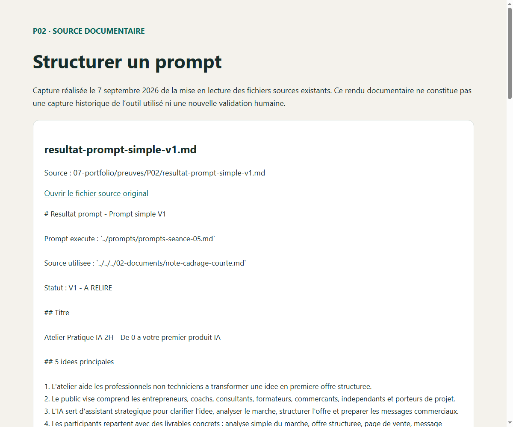

P02 · PIÈCE À EXAMINER · DOCUMENTATION DU PROJET
Structurer un prompt
Capture réalisée le 7 septembre 2026 de la mise en lecture des fichiers sources existants. Ce rendu documentaire ne constitue pas une capture historique de l’outil utilisé ni une nouvelle validation humaine.

Cliquer sur l’image pour l’agrandir. Capture actuelle, source conservée ci-dessous.Examiner le contenu réel
resultat-prompt-simple-v1.md
Source : 07-portfolio/preuves/P02/resultat-prompt-simple-v1.md
Ouvrir le fichier source original
# Resultat prompt - Prompt simple V1
Prompt execute : `../prompts/prompts-seance-05.md`
Source utilisee : `../../../02-documents/note-cadrage-courte.md`
Statut : V1 - A RELIRE
## Titre
Atelier Pratique IA 2H - De 0 a votre premier produit IA
## 5 idees principales
1. L'atelier aide les professionnels non techniciens a transformer une idee en premiere offre structuree.
2. Le public vise comprend les entrepreneurs, coachs, consultants, formateurs, commercants, independants et porteurs de projet.
3. L'IA sert d'assistant strategique pour clarifier l'idee, analyser le marche, structurer l'offre et preparer les messages commerciaux.
4. Les participants repartent avec des livrables concrets : analyse simple du marche, offre structuree, page de vente, message WhatsApp, base Meta et plan d'action 7 jours.
5. Le controle humain reste indispensable pour verifier les promesses, le ton, les prix, les exemples et la pertinence des supports.
## Conclusion courte
Cet atelier propose une approche pratique et directement exploitable pour aider les professionnels a passer de l'intention a l'action avec l'aide de l'IA, sans perdre le controle humain sur la qualite et la responsabilite du projet.
## Checklist de verification
- [ ] Le public cible est clair.
- [ ] La promesse de l'atelier reste realiste.
- [ ] Les livrables sont concrets.
- [ ] Le role de l'IA est presente comme un appui, pas comme une garantie.
- [ ] Les points a verifier par l'humain sont visibles.
resultat-prompt-structure-v1.md
Source : 07-portfolio/preuves/P02/resultat-prompt-structure-v1.md
Ouvrir le fichier source original
# Resultat prompt - Prompt structure V1
Prompt execute : `../prompts/prompts-seance-06.md`
Source utilisee : `../../../02-documents/note-cadrage-courte.md`
Statut : V1 - A RELIRE
## Role
Tu es un assistant de production pedagogique et strategique pour aider Mohamed BOUMRAH a transformer son projet "Atelier Pratique IA 2H" en livrables clairs, utiles et verifies.
## Contexte
Mohamed BOUMRAH est Master coach personnel et professionnel. Il porte le projet DEEP PERFORMANCE - REWIRE YOUR MIND.
Il veut concevoir un atelier pratique de 2 heures pour aider des entrepreneurs, coachs, consultants, formateurs, commercants et porteurs de projet a passer d'une idee a une premiere offre structuree grace a l'intelligence artificielle.
## Objectif
Produire une synthese claire du projet et preparer les prochains livrables utiles :
- fiche projet ;
- page de vente ;
- message WhatsApp ;
- base de publicite Meta ;
- plan d'action sur 7 jours.
## Contraintes
- Garder un style simple.
- Ne pas inventer d'informations absentes.
- Eviter les promesses excessives.
- Signaler les points a verifier par l'humain.
- Structurer la reponse en sections.
- Produire une version courte et exploitable.
## Format attendu
Markdown avec :
1. titre ;
2. resume du projet ;
3. public cible ;
4. probleme traite ;
5. livrables attendus ;
6. prochaine action ;
7. checklist de controle.
## Version courte produite
### Titre
Atelier Pratique IA 2H - De 0 a votre premier produit IA
### Resume du projet
L'atelier aide des professionnels non techniciens a transformer une idee en premiere offre structuree et testable. Il combine coaching, strategie entrepreneuriale et IA pratique.
### Public cible
Entrepreneurs, coachs, consultants, formateurs, commercants, independants, salaries en reconversion et porteurs de projet.
### Probleme traite
Le public a souvent des idees, mais manque de methode pour les clarifier, les structurer et les transformer en supports commerciaux.
### Livrables attendus
- Analyse simple du marche.
- Offre structuree.
- Prompt personnel.
- Page de vente.
- Message WhatsApp.
- Base de publicite Meta.
- Plan d'action 7 jours.
### Prochaine action
Transformer cette synthese en fiche projet V1, puis produire une page de vente testable.
## Checklist de controle
- [ ] Le role est clair.
- [ ] Le contexte est visible.
- [ ] L'objectif est concret.
- [ ] Les contraintes sont respectees.
- [ ] La reponse ne promet pas de resultat garanti.
- [ ] Les points humains a verifier sont notes.